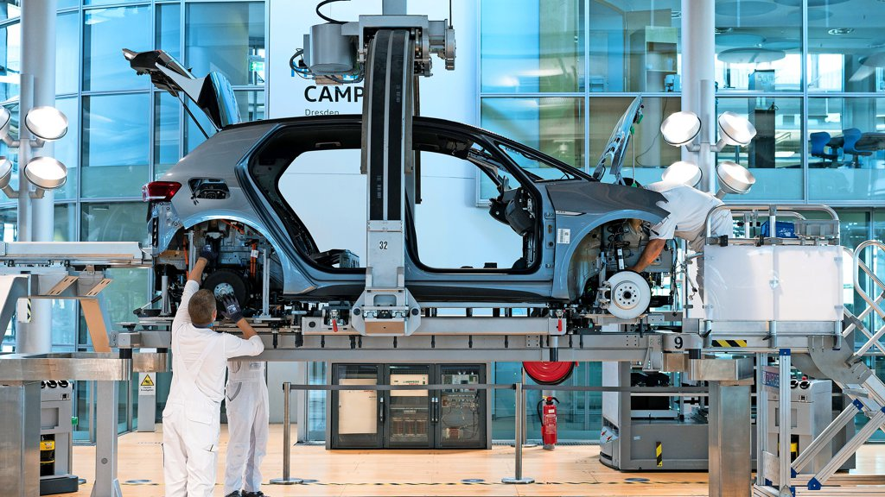
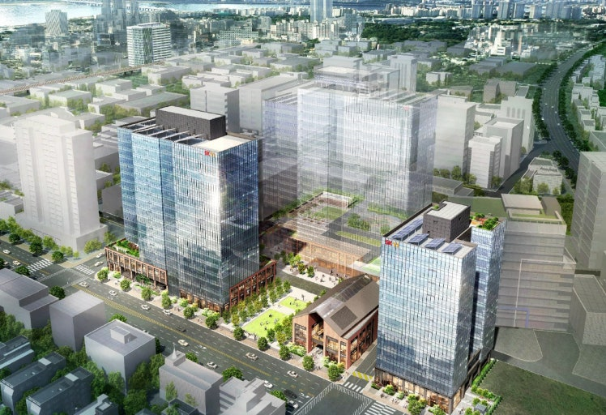
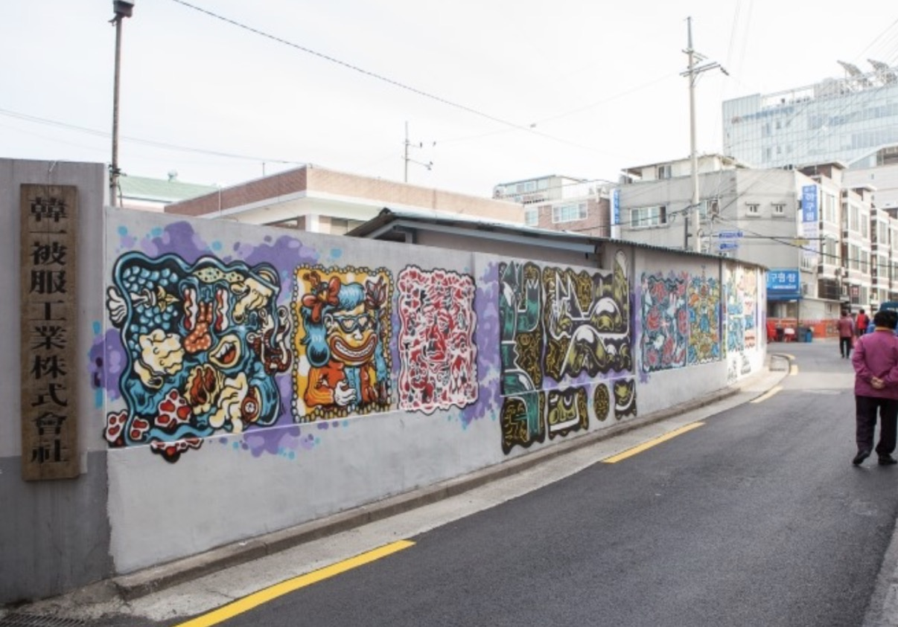

글레제르네 마누팍투어
독일 드레스덴 도심 한복판에 위치한 폭스바겐의 친환경 생산 기지입니다. 전체 외벽의 상당 부분을 투명한 유리로 마감하여, 외부 보행자가 공장 내부에서 자동차가 조립되는 전 과정을 시각적으로 관람할 수 있도록 설계되었습니다. 제조 공간이 도시의 핵심 랜드마크이자 복합 문화 공간으로 기능할 수 있음을 증명한 대표적인 쇼팩토리 사례입니다.
성수동 프로젝트 시사점
공장의 제조 공정 자체를 투명하게 노출(시각적 개방)함으로써, 닫혀 있던 성수동 인쇄 공장들의 전면부를 가로변 보행자에게 매력적인 '시각적 콘텐츠'로 전환할 수 있는 논리를 제공합니다.

스미다구 오픈팩토리
도쿄의 대표적인 노후 준공업지역인 스미다구 일대에서 진행되는 지역 산업 재생 프로그램입니다. 영세한 소규모 인쇄소, 금속 가공 공장들이 특정 기간 동안 내부 작업 공간을 전면 개방하고, 방문객들이 골목길을 걸으며 직접 인쇄 장비를 체험하고 디자이너와 협업할 수 있도록 네트워크를 구축했습니다. 단절되었던 산업 블록에 보행 유동인구를 유입시켰습니다.
성수동 프로젝트 시사점
성수동 북측의 영세 인쇄 단지가 대규모 개발 없이도 '보행 통로 확보'와 '체험 프로그램 연계'를 통해 소외된 골목길 산업 지대를 활성화하는 물리적·소프트웨어적 해법이 될 수 있습니다.

지식산업센터 복합화 및 가로 활성화
과거 낙후된 공장 부지를 현대적인 지식산업센터(생각공장 성수, 디원 에이치 등)로 재개발하면서, 지하층과 저층부에 대형 서점, 세련된 카페, 문화시설을 의무 배치하여 직장인뿐만 아니라 일반 시민들의 가로변 보행을 적극적으로 유도한 재생 사례입니다.
성수동 프로젝트 시사점
아파트형 공장이 단순한 폐쇄적 업무 공간을 넘어 도심 속 문화·상업 거점이 될 수 있음을 증명합니다. 본 설계 대상지의 저층부 개방 및 오픈 스페이스 설계를 위한 직접적인 물리적 벤치마킹 모델로 활용됩니다.


스트리트 아트 및 그래픽 노면 인쇄
낙후된 인쇄 공장 밀집 지역의 도로 바닥면에 인쇄 고유의 CMYK 컬러칩과 타이포그래피 레이아웃을 그래픽 노면 도색(인쇄) 기법으로 입힌 사례입니다. 기존의 어둡고 삭막하던 공장 골목길을 '인쇄 아트 로드'로 인지적 탈바꿈을 유도하여 트렌디한 젊은 층의 보행 유입을 이끌어냈습니다.
성수동 프로젝트 시사점
지역 고유 산업(인쇄)의 그래픽적 아이덴티티를 도로 표면 디자인에 직접 녹여냄으로써, 단순한 통로 기능에 머물던 길을 가로 브랜딩 마케팅 거점으로 활용할 수 있는 소프트웨어적 대안을 제시합니다.